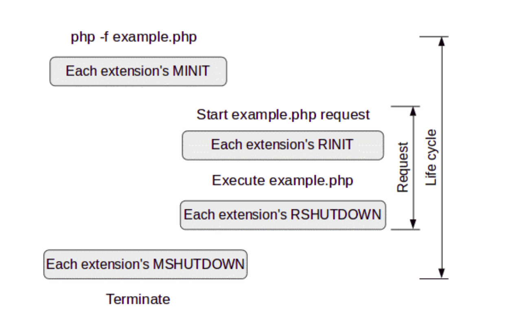
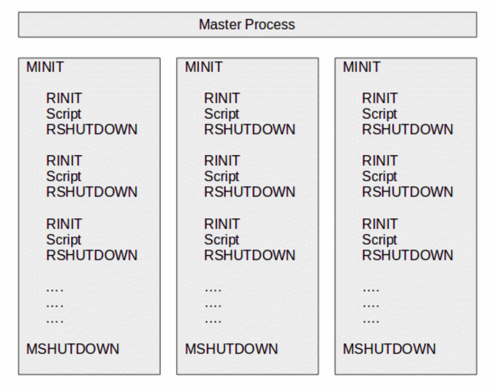
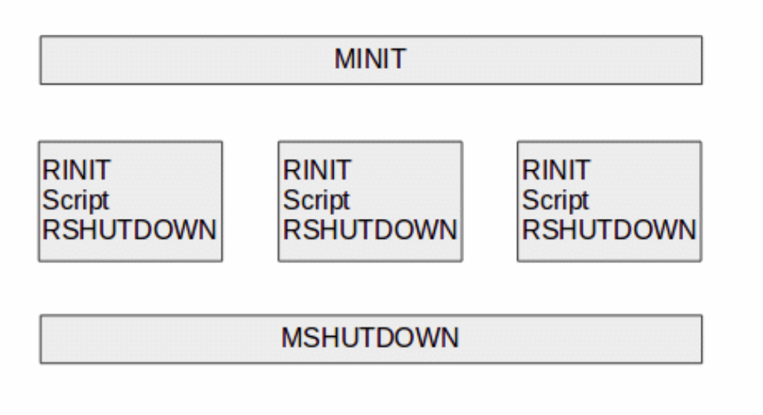

Created by Lorenzo Fontana / @fntlnz
Link against an external library
Performances optimization
To better understand PHP internals



Grab the latest PHP version
wget -nv -O - http://uk1.php.net/distributions/php-5.6.3.tar.gz | tar zx
cd php-5.6.3
Configure it for PHP Development
./configure --prefix=/tmp/php-debug --enable-debug --enable-maintainer-zts \
--disable-cgi --enable-cli --disable-pear --with-readline
Make and install
make -j2
sudo make installAccording to our configuration options this will compile PHP and install it into the /tmp/php-debug folder.
To use it temporarily in place of your working PHP just prepend it's location to the $PATH
export $PATH="/tmp/php-debugi/bin:$PATH"Now issuing a php -v should show something like
PHP 5.6.3 (cli) (built: Oct 20 2014 19:00:00) (DEBUG)
Copyright (c) 1997-2014 The PHP Group
Zend Engine v2.6.0, Copyright (c) 1998-2014 Zend Technologies
PHP With Debug Flags === Overhead| PHP | PHP (DEBUG) |
|
|
Template to generate a configure script with phpize.
dnl config.m4 for extension hello_world
PHP_ARG_WITH(hello_world, whether to enable hello world support,
[ --enable-hello-world Enable hello world])
if test "$PHP_HELLOWORLD" != "no"; then
PHP_NEW_EXTENSION(hello_world, hello_world.c, $ext_shared)
fi
#ifndef PHP_HELLO_WORLD_H
#define PHP_HELLO_WORLD_H
#ifdef HAVE_CONFIG_H
#include "config.h"
#endif
#include "php.h"
#define PHP_HELLO_WORLD_NAME "hello_world" /* Replace with name of your extension */
#define PHP_HELLO_WORLD_VERSION "0.1.0" /* Replace with version number for your extension */
#endif /* PHP_HELLO_WORLD_H */
#include "php_hello_world.h"
PHP_FUNCTION (hello_world) {
char *arg = NULL;
size_t arg_len, len;
if (zend_parse_parameters(ZEND_NUM_ARGS() TSRMLS_CC, "s", &arg, &arg_len) == FAILURE) {
return;
}
char *greet = emalloc(strlen("Hi ") + strlen(arg) + strlen("!") + 1);
strcpy(greet, "Hi ");
strcat(greet, arg);
strcat(greet, "!");
RETURN_STRING(greet, 1);
}
PHP_MINIT_FUNCTION (hello_world) {
This is a simple benchmark with the CLI Sapi to appreciate the difference.
return SUCCESS;
}
const zend_function_entry hello_world_functions[] = {
PHP_FE(hello_world, NULL)
PHP_FE_END
};
zend_module_entry hello_world_module_entry = {
STANDARD_MODULE_HEADER,
PHP_HELLO_WORLD_NAME,
hello_world_functions,
PHP_MINIT(hello_world),
NULL,
NULL,
NULL,
NULL,
PHP_HELLO_WORLD_VERSION,
STANDARD_MODULE_PROPERTIES
};
#ifdef COMPILE_DL_HELLO_WORLD
ZEND_GET_MODULE(hello_world)
#endif
phpize
./configure
make
php -d extension=modules/hello_world.so -r 'echo hello_world("Lorenzo");'
| Prototype | Description |
|---|---|
void *emalloc(size_t size)void *pemalloc(size_t count, char persistent); |
Allocate size bytes of memory. |
void *ecalloc(size_t count); void *pecalloc(size_t count, char persistent); |
Allocate a buffer for nmemb elements of
size bytes and makes sure it is initialized with zeros.
|
void *erealloc(void *ptr, size_t count); void *perealloc(void *ptr, size_t count, char persistent); |
esize the buffer ptr, which was allocated using
emalloc to hold size bytes of memory.
|
void efree(void *ptr);void pefree(void *ptr, char persistent); |
Free the buffer pointed by ptr. The buffer had to be
allocated by emalloc.
|
void *estrdup(void *ptr); |
Allocate a buffer that can hold the NULL-terminated string
s and copy the s into that buffer.
|
The fundamental unit of data storage in PHP
typedef struct _zval_struct {
zvalue_value value; /* variable value */
zend_uint refcount__gc; /* reference counter */
zend_uchar type; /* value type */
zend_uchar is_ref__gc; /* reference flag */
} zval;
The zval_value is a union which can represent all types a variable may hold:
typedef union _zvalue_value {
long lval;
double dval;
struct {
char *val;
int len;
} str;
HashTable *ht;
zend_object_value obj;
} zvalue_value;
| Constant | Mapping |
|---|---|
IS_NULL |
no value is set in this case |
IS_LONG |
lval |
IS_DOUBLE |
dval |
IS_BOOL |
lval |
| IS_RESOURCE | lval |
| IS_STRING | str |
IS_ARRAY |
ht |
IS_OBJECT |
obj |
MAKE_STD_ZVAL(pzv)
|
|
The new thing here is the ZEND_SET_SYMBOL(symtable, name, var) macro that exposes the foo variable to the userland via active_symbol_table
void display_values(zval boolzv, zval *longpzv,
zval **doubleppzv, zval *zstr)
{
if (Z_TYPE(boolzv) == IS_BOOL) {
php_printf("The value of the boolean is: %s\n",
Z_BVAL(boolzv) ? "true" : "false");
}
if (Z_TYPE_P(longpzv) == IS_LONG) {
php_printf("The value of the long is: %ld\n",
Z_LVAL_P(longpzv));
}
if (Z_TYPE_PP(doubleppzv) == IS_DOUBLE) {
php_printf("The value of the double is: %f\n",
Z_DVAL_PP(doubleppzv));
}
if (Z_TYPE_PP(doubleppzv) == IS_DOUBLE) {
php_printf("The value of the double is: %f\n",
Z_DVAL_PP(doubleppzv));
}
if (Z_TYPE_P(zstr) == IS_STRING) {
php_printf("The length of the string is: %ld\n",
Z_STRLEN_P(zstr));
php_printf("The content of the string is %s\n",
Z_STRVAL_P(zstr));
}
}
zend_class_entry *ce_Example;
zend_function_entry php_example_methods[] = {
PHP_FE_END
};
PHP_MINIT_FUNCTION(example) {
zend_class_entry ce_example_local;
INIT_CLASS_ENTRY(ce_example_local, “Example”, php_example_methods);
ce_Example = zend_register_internal_class(&ce_example_local TSRMLS_CC);
return SUCCESS;
}
PHP_METHOD(example, setName) {
zval *obj;
char *name;
int name_len;
if (zend_parse_method_parameters(ZEND_NUM_ARGS() TSRMLS_CC, getThis(), "Os", &obj, ce_Example, &name, &name_len) == FAILURE) {
RETURN_NULL();
}
zend_update_property_string(cld2_detector_ce, obj, "name", sizeof("name") - 1, name TSRMLS_CC);
}
ZEND_BEGIN_ARG_INFO(arginfo_example_set_name, 0)
ZEND_ARG_INFO(0, name)
ZEND_END_ARG_INFO()zend_function_entry php_example_methods[] = {
PHP_ME(example, setName, arginfo_example_set_name, ZEND_ACC_PUBLIC)
}
PHP_MINIT_FUNCTION(example) {
zend_class_entry ce_example_local;
INIT_CLASS_ENTRY(ce_example_local, “Example”, php_example_methods);
ce_Example = zend_register_internal_class(&ce_example_local TSRMLS_CC);
zend_declare_property_string(ce_Example, "name", sizeof("name") - 1, "", ZEND_ACC_PUBLIC TSRMLS_CC);
return SUCCESS;
}gdb --tui --args php -d extension=modules/hello_world.so -r 'echo hello_world("Lorenzo");'cgdb --args php -d extension=modules/hello_world.so -r 'echo hello_world("Lorenzo");'